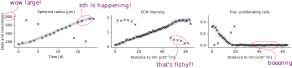

fitting heterogeneous data
modeling

biological processes are complicated
model types
 based on Hasenauer et al., J. Coup. Sys. and Mult. Dyn.
2015
based on Hasenauer et al., J. Coup. Sys. and Mult. Dyn.
2015
A mathematical model is a representation of the essential aspects of a system [...] which presents knowledge of that system in usable form.
Pieter Eykhoff 1974
All models are wrong, but some are useful.
George Box 1976
the inverse problem


parameter inference
basic idea

likelihood-free Bayesian inference
- common optimization and sampling methods (e.g. MCMC) require the (unnormalized) likelihood
- can happen: numerical evaluation infeasible
- ... but still possible to simulate data $y\sim\pi(y|\theta)$
example: modeling tumor growth
based on Jagiella et al., Cell Systems 2017
- cells modeled as interacting stochastic agents, dynamics of extracellular substances by PDEs
- simulate up to 106 cells
- 10s - 1h for one forward simulation
- 7-18 parameters
- more examples: Durso-Cain et al., bioRxiv 2021, Syga et al., arXiv 2021, ...
abc
mini-intro abc
- Approximate Bayesian Computation enables Bayesian inference for $$\pi(\theta|y_\text{obs}) \propto \pi(y_\text{obs}|\theta)\pi(\theta)$$ if the likelihood cannot be evaluated
- until $N$ acceptances:
- sample parameters $\theta\sim\pi(\theta)$
- simulate data $y\sim\pi(y|\theta)$
- accept if $d(s(y), s(y_\text{obs}))\leq\varepsilon$
- often combined with an SMC scheme, $\varepsilon\rightarrow\varepsilon_t, \pi(\theta)\rightarrow g_t(\theta), t=1,\ldots,n_t$

theoretically ...
- samples from $$\pi_{\text{ABC},\varepsilon}(\theta|s(y_\text{obs})) \propto \int I[d(s(y),s(y_\text{obs}))\leq\varepsilon]\pi(y|\theta)\operatorname{dy}\pi(\theta)$$
- under mild conditions, $$\pi_{\text{ABC},\varepsilon}(\theta|s(y_\text{obs})) \xrightarrow{\varepsilon\searrow 0} \pi(\theta|s(y_\text{obs})) \propto \pi(s(y_\text{obs})|\theta)\pi(\theta)$$
see e.g. Schälte et al., Bioinformatics 2020


 $$d(y,y_\text{obs}) = \left(\sum_{i_y}(r_{i_y} \cdot (y_{i_y} - y_{{i_y},\text{obs}}))^p\right)^{1/p}$$
$$d(y,y_\text{obs}) = \left(\sum_{i_y}(r_{i_y} \cdot (y_{i_y} - y_{{i_y},\text{obs}}))^p\right)^{1/p}$$


only combination of novel methods permits accurate inference
 sensitivity analysis permits further insights
sensitivity analysis permits further insights
widely, robustly applicable, restriction to high-density region preferable
sensitivity-weighting improves estimates on application problem substantially
 weighting re-prioritizes data points
weighting re-prioritizes data points
 applicable to outlier-corrupted data
applicable to outlier-corrupted data
 Not everything is a nail.
Not everything is a nail.

practically ...
- ABC easily gives bad results if summary statistics and distance are not properly calibrated
- practical limitations vs theoretical guarantees
- posteriors can vary a lot by method
how to choose good summary statistics and distance functions?
robust adaptive distances
Schälte et al., bioRxiv 2021background: adaptive distances
$$d(y,y_\text{obs}) = \left(\sum_{i_y}(r_{i_y} \cdot (y_{i_y} - y_{{i_y},\text{obs}}))^p\right)^{1/p}$$
- Prangle 2017: in ABC-SMC, iteratively update scale-normalizing weights $r^t$ to adjust for proposal $g_t(\theta)$
problems
- performs badly for high-dimensional problems
- sensitive to outliers
solutions
- robust Manhattan norm with bounded variance
- active online outlier detection and down-weighting by bias assessment, $r_{i_y} = \sqrt{\mathbb{E}[(y_{i_y} - y_{{i_y},\text{obs}})^2]} = \sqrt{\text{Var}(\{y^i_{i_y}\}_{i}) + \text{Bias}(\{y^i_{i_y}\}_{i},y_{{i_y},\text{obs}})^2}$
- yields a widely applicable efficient and robust distance metric
results
accurate results on various problem typesresults
applicable to complex application exampleinformative distances and summary statistics
Schälte et al., in preparationbackground: regression-based sumstats
background: regression-based sumstats
- Fearnhead et al. 2012: Good statistics are $s(y) = \mathbb{E}[\theta|y]$
- use a linear approximation $\mathbb{E}[\theta|y] \approx s(y) = Ay + b$
- learn model $s: y\mapsto\theta$ from calibration samples, with (augmented) data as features, and parameters as targets
- alternative regression models: Ridge (Blum et al. 2013), NN (Jiang et al. 2017), GP (Borowska et al. 2020)
problems
- identification of a high-density region for training
- the same problems motivating adaptive distances apply, shifted to "parameter" space
- scale-normalized distances alone do not account for informativeness
- parameter non-identifiability
solutions
- combine regression-based sumstats with scale-normalized weights
- integrate sumstats learning in ABC-SMC workflow
- alternative: regression-based sensitivity distance weights
- employ higher-order moments as regression targets
regression-based sensitivity distance weights
idea: employ regression model not to construct sumstats, but to define sensitivity weights \begin{equation}\label{eq:info_weight} q_{i_y} = \sum_{i_\theta=1}^{n_\theta} \frac{\left|S_{i_yi_\theta}\right|}{ \sum_{j_y=1}^{n_y}\left|S_{j_yi_\theta}\right|}, \end{equation} as the sum of the absolute sensitivities of all parameters with respect to model output $i_y$, normalized per parameter, where \begin{equation}\label{eq:info_S} S = \nabla_y s(y_\text{obs})\in\mathbb{R}^{n_y \times n_\theta} \end{equation}augmented regression targets
[...] Given $\lambda:\mathbb{R}^{n_\theta}\rightarrow\mathbb{R}^{n_\lambda}$ such that $\mathbb{E}_{\pi(\theta)}[|\lambda(\theta)|]<\infty$, define summary statistics as the conditional expectation
$$s(y) := \mathbb{E}[\lambda(\Theta)|Y=y] = \int \lambda(\theta)\pi(\theta|y)d\theta.$$
Then, it holds
$\left\lVert{\mathbb{E}_{\pi_{\text{ABC},\varepsilon}}[\lambda(\Theta)|s(y_\text{obs})] - s(y_\text{obs})}\right\rVert \leq \varepsilon$,
and therefore
\begin{equation}\label{eq:sreg_conv}
\lim_{\varepsilon\rightarrow 0}\mathbb{E}_{\pi_{\text{ABC},\varepsilon}}[\lambda(\Theta)|s(y_\text{obs} )] = \mathbb{E}[\lambda(\Theta)|Y=y_\text{obs}].
\end{equation}
Proof: Yep.
In practice: Use regression model $s: y \mapsto \lambda(\theta) = (\theta^1,\ldots,\theta^k)$.implementation
from pyabc import *
distance: Distance = AdaptivePNormDistance(
sumstat=ModelSelectionPredictorSumstat(
predictors=[
LinearPredictor(),
GPPredictor(kernel=['RBF', 'WhiteKernel']),
MLPPredictor(hidden_layer_sizes=(50, 50, 50)),
],
),
scale_function=rmse,
pre=[lambda x: x, lambda x: x**2],
par_trafo=[lambda y: y, lambda y: y**2],
)
🦁 a boss model
- $y_1\sim\mathcal{N}(\theta_1,0.1^2)$ is informative of $\theta_1$, with a relatively wide corresponding prior $\theta_1\sim U[-7, 7]$,
- $y_2\sim\mathcal{N}(\theta_2,100^2)$ is informative of $\theta_2$, with corresponding prior $\theta_2\sim U[-700, 700]$,
- $y_3\sim\mathcal{N}(\theta_3, 4 \cdot 100^2)^{\otimes 4}$ is a four-dimensional vector informative of $\theta_3$, with corresponding prior $\theta_3\sim U[-700, 700]$,
- $y_4\sim\mathcal{N}(\theta_4^2, 0.1^2)$ is informative of $\theta_4$, with corresponding symmetric prior $\theta_4\sim U[-1, 1]$, however is quadratic in the parameter, resulting in a bimodal posterior distribution for $y_{\text{obs},4}\neq 0$,
- $y_5\sim\mathcal{N}(0, 10)^{\otimes 10}$ is an uninformative 10-dimensional vector.
weighting re-prioritizes data points
applicable to outlier-corrupted data
discussion
discussion
- accounting for both scale and informativeness substantially improves performance
- extended to non-identifiable parameters
- model selection for integrated workflow
- numerous improvements and follow-ups possible
Not everything is a nail.